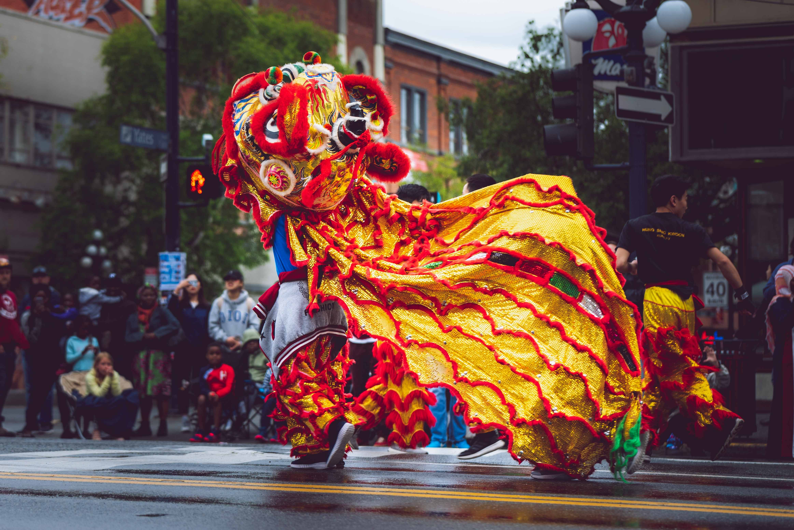
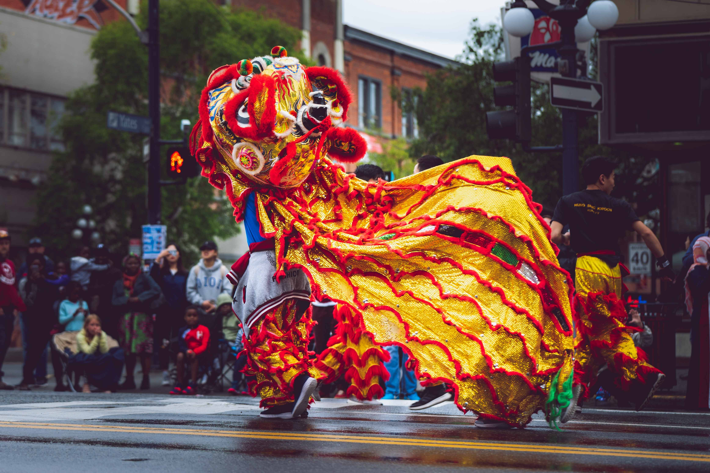

Bu sayfa bir proje ödevidir. Sayfamızı ziyaret ettiğiniz için teşekkürler.
Proje
Vancouver, Kanada'nın batı kıyısında yer alan ve British Columbia eyaletinin en büyük şehirlerinden biridir. Kendine özgü doğal güzellikleri, kültürel çeşitliliği ve yüksek yaşam standartlarıyla dünyanın en popüler şehirlerinden biri olarak kabul edilir. Aşağıda Vancouver hakkında detaylı bilgiler yer almaktadır.
1-Doğal Güzellikleri
Vancouver, dünya genelindeki en güzel şehirlerden biridir ve nedeni şehir merkezine hakim olan şaşırtıcı manzaralı deniz, dağlar ve ormanlarla çevrili olmasıdır. Şehir, Büyük Okyanus'a doğru açılan koylar, adalar, plajlar ve parklarla doludur. Stanley Park, dünyanın en büyük şehir parklarından biri olarak kabul edilir ve yürüyüş, koşu, bisiklet ve piknik yapmak için mükemmel bir yerdir. Grouse Dağı, şehrin hemen kuzeyinde yer alır ve zirvesine çıkmak için teleferikle yolculuk yapabilirsiniz.
2-Kültürel Çeşitlilik
Vancouver, dünyanın en çeşitli şehirlerinden biridir ve bu da zengin bir kültürel ortam yaratır. Şehir, yüzlerce farklı etnik kökene sahip insanlar tarafından yaşanmaktadır ve bu da farklı kültürlerden yemekler, festivaller ve sanat etkinlikleri ile sonuçlanır. Chinatown, şehirdeki en eski mahallelerden biridir ve Çin kültürüne ait ürünleri ve yemekleri satan mağazalarla doludur. Diğer etnik mahalleler arasında Little Italy, Greektown ve Punjabi Market bulunur.
3-Ekonomi
Vancouver, Kanada'nın en önemli ekonomik merkezlerinden biridir ve yüksek yaşam standartları ve istihdam fırsatları ile tanınır. Şehir, finans, turizm, liman ve teknoloji sektörleri gibi birçok alanda büyük işletmelere ev sahipliği yapar. Vancouver, aynı zamanda birçok farklı ülkeden yatırımcıları cezbeden bir yatırım merkezidir.
4-Eğitim
Vancouver, dünya genelinde saygın bir eğitim kurumu olan University of British Columbia'ya ev sahipliği yapmaktadır. Ayrıca, Simon Fraser University ve British Columbia Institute of Technology gibi diğer üniversiteler de şehirde bulunmaktadır. Vancouver, eğitim kalitesi, saygın öğretim kadrosu ve farklı alanlarda lisans ve yüksek lisans programları ile dünya genelinde öğrencilerin tercih ettiği bir yerdir.
1-Doğal güzellikleri: Vancouver, muhteşem manzaraları, dağları, ormanları, plajları ve parkları ile ünlüdür. Stanley Park, Grouse Dağı ve Capilano Asma Köprüsü, doğal güzelliklerini keşfetmek isteyen ziyaretçiler için popüler yerlerdir.
2-Çok kültürlü yapı: Vancouver, dünya çapında birçok kültürün temsil edildiği çok kültürlü bir şehirdir. Şehirde Asya, Avrupa ve Kuzey Amerika kültürleri gibi farklı kültürler bir arada bulunur.
3-Turistik yerler: Vancouver, turistler için birçok turistik yere ev sahipliği yapar. Canada Place, Vancouver Akvaryumu, Museum of Anthropology ve Science World gibi yerler popüler turistik yerler arasındadır.
4-Spor aktiviteleri: Vancouver, birçok spor aktivitesine ev sahipliği yapar. Kış aylarında kayak merkezleri ve yaz aylarında plajlar, bisiklet parkurları ve yürüyüş rotaları, spor sevenler için ideal yerlerdir.
5-İklimi: Vancouver, ılıman bir iklime sahiptir ve yıl boyunca ılık ve yağışlı hava koşullarına sahiptir. Bu, açık hava aktivitelerinin yapılabileceği birçok fırsat sunar.
 Yüksek Yaşam Standartı
Yüksek Yaşam Standartı
İş Olanakları
Kültür
Eğitim
1-Stanley Park'ta yürüyüş yapmak veya bisiklete binmek.
2-Grouse Dağı'na teleferikle çıkmak ve manzaraları izlemek.
3-Capilano Asma Köprüsü'nde yürüyüş yapmak.
4-Deniz kenarındaki plajlarda yüzmek ve güneşlenmek.
5-Vancouver Akvaryumu'nu ziyaret etmek.
6-Museum of Anthropology'deki yerli sanat ve kültür sergilerini ziyaret etmek.
7-Science World'deki interaktif sergileri ziyaret etmek.
8-Vancouver Art Gallery'deki sanat eserlerini ziyaret etmek.
9-English Bay'da güneş batımını izlemek.
10-Kış aylarında Whistler kayak merkezine gidip kayak yapmak.
"Vancouver, Kanada'nın incisi." - Lonely Planet
"Vancouver, doğal güzellikleri, çok kültürlü yapısı ve sürdürülebilir enerji çözümleri ile örnek bir şehir." - National Geographic
"Vancouver, doğanın ve modern yaşamın mükemmel bir karışımını sunan bir şehir." - The Guardian

 
